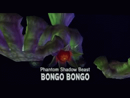

The final boss of the Shadow Temple in The Legend of Zelda: Ocarina of Time. Escaping from it's seal at the Bottom of the Well in Kakariko Villiage,
Bongo-Bongo began it's rampage within the Shadow Temple, where the Sage of Shadow, Impa, resided.
Cloaking it's body in shadow, the beast uses it's floating hands to beat and squeeze the life out of the Hero of Time.
Only with the aid of the Lens of Truth can the Hero have a chance at defesting this monstrosity and sealing it back within the Well once and for all.
